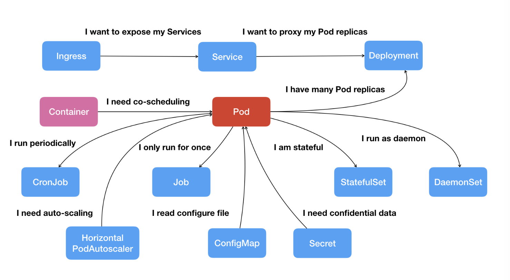
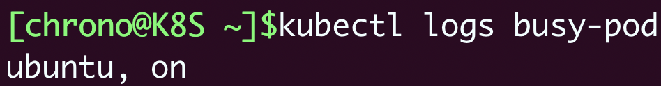
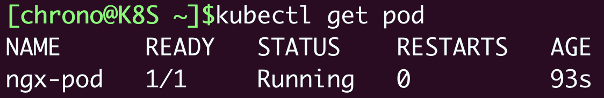

- 00 开篇词 迎难而上，做云原生时代的弄潮儿.md
- 00 课前准备 动手实践才是最好的学习方式.md
- 01 初识容器：万事开头难.md
- 02 被隔离的进程：一起来看看容器的本质.md
- 03 容器化的应用：会了这些你就是Docker高手.md
- 04 创建容器镜像：如何编写正确、高效的Dockerfile.md
- 05 镜像仓库：该怎样用好Docker Hub这个宝藏.md
- 06 打破次元壁：容器该如何与外界互联互通.md
- 07 实战演练：玩转Docker.md
- 08 视频：入门篇实操总结.md
- 09 走近云原生：如何在本机搭建小巧完备的Kubernetes环境.md
- 10 自动化的运维管理：探究Kubernetes工作机制的奥秘.md
- 11 YAML：Kubernetes世界里的通用语.md
- 12 Pod：如何理解这个Kubernetes里最核心的概念？.md
- 13 Job_CronJob：为什么不直接用Pod来处理业务？.md
- 14 ConfigMap_Secret：怎样配置、定制我的应用.md
- 15 实战演练：玩转Kubernetes（1）.md
- 16 视频：初级篇实操总结.md
- 17 更真实的云原生：实际搭建多节点的Kubernetes集群.md
- 18 Deployment：让应用永不宕机.md
- 19 Daemonset：忠实可靠的看门狗.md
- 20 Service：微服务架构的应对之道.md
- 21 Ingress：集群进出流量的总管.md
- 22 实战演练：玩转Kubernetes（2）.md
- 23 视频：中级篇实操总结.md
- 24 PersistentVolume：怎么解决数据持久化的难题？.md
- 25 PersistentVolume + NFS：怎么使用网络共享存储？.md
- 26 StatefulSet：怎么管理有状态的应用？.md
- 27 滚动更新：如何做到平滑的应用升级降级？.md
- 28 应用保障：如何让Pod运行得更健康？.md
- 29 集群管理：如何用名字空间分隔系统资源？.md
- 30 系统监控：如何使用Metrics Server和Prometheus？.md
- 31 网络通信：CNI是怎么回事？又是怎么工作的？.md
- 32 实战演练：玩转Kubernetes（3）.md
- 33 视频：高级篇实操总结.md
- 加餐 docker-compose：单机环境下的容器编排工具.md
- 加餐 谈谈Kong Ingress Controller.md
- 结束语 是终点，更是起点.md
12 Pod：如何理解这个Kubernetes里最核心的概念？
你好，我是Chrono。
前两天我们学习了Kubernetes世界里的工作语言YAML，还编写了一个简短的YAML文件，描述了一个API对象：Pod，它在spec字段里包含了容器的定义。
那么为什么Kubernetes不直接使用已经非常成熟稳定的容器？为什么要再单独抽象出一个Pod对象？为什么几乎所有人都说Pod是Kubernetes里最核心最基本的概念呢？
今天我就来逐一解答这些问题，希望你学完今天的这次课，心里面能够有明确的答案。
为什么要有Pod
Pod这个词原意是“豌豆荚”，后来又延伸出“舱室”“太空舱”等含义，你可以看一下这张图片，形象地来说Pod就是包含了很多组件、成员的一种结构。

容器技术我想你现在已经比较熟悉了，它让进程在一个“沙盒”环境里运行，具有良好的隔离性，对应用是一个非常好的封装。
不过，当容器技术进入到现实的生产环境中时，这种隔离性就带来了一些麻烦。因为很少有应用是完全独立运行的，经常需要几个进程互相协作才能完成任务，比如在“入门篇”里我们搭建WordPress网站的时候，就需要Nginx、WordPress、MariaDB三个容器一起工作。
WordPress例子里的这三个应用之间的关系还是比较松散的，它们可以分别调度，运行在不同的机器上也能够以IP地址通信。
但还有一些特殊情况，多个应用结合得非常紧密以至于无法把它们拆开。比如，有的应用运行前需要其他应用帮它初始化一些配置，还有就是日志代理，它必须读取另一个应用存储在本地磁盘的文件再转发出去。这些应用如果被强制分离成两个容器，切断联系，就无法正常工作了。
那么把这些应用都放在一个容器里运行可不可以呢？
当然可以，但这并不是一种好的做法。因为容器的理念是对应用的独立封装，它里面就应该是一个进程、一个应用，如果里面有多个应用，不仅违背了容器的初衷，也会让容器更难以管理。
为了解决这样多应用联合运行的问题，同时还要不破坏容器的隔离，就需要在容器外面再建立一个“收纳舱”，让多个容器既保持相对独立，又能够小范围共享网络、存储等资源，而且永远是“绑在一起”的状态。
所以，Pod的概念也就呼之欲出了，容器正是“豆荚”里那些小小的“豌豆”，你可以在Pod的YAML里看到，“spec.containers”字段其实是一个数组，里面允许定义多个容器。
如果再拿之前讲过的“小板房”来比喻的话，Pod就是由客厅、卧室、厨房等预制房间拼装成的一个齐全的生活环境，不仅同样具备易于拆装易于搬迁的优点，而且要比单独的“一居室”功能强大得多，能够让进程“住”得更舒服。
为什么Pod是Kubernetes的核心对象
因为Pod是对容器的“打包”，里面的容器是一个整体，总是能够一起调度、一起运行，绝不会出现分离的情况，而且Pod属于Kubernetes，可以在不触碰下层容器的情况下任意定制修改。所以有了Pod这个抽象概念，Kubernetes在集群级别上管理应用就会“得心应手”了。
Kubernetes让Pod去编排处理容器，然后把Pod作为应用调度部署的最小单位，Pod也因此成为了Kubernetes世界里的“原子”（当然这个“原子”内部是有结构的，不是铁板一块），基于Pod就可以构建出更多更复杂的业务形态了。
下面的这张图你也许在其他资料里见过，它从Pod开始，扩展出了Kubernetes里的一些重要API对象，比如配置信息ConfigMap、离线作业Job、多实例部署Deployment等等，它们都分别对应到现实中的各种实际运维需求。

不过这张图虽然很经典，参考价值很高，但毕竟有些年头了，随着Kubernetes的发展，它已经不能够全面地描述Kubernetes的资源对象了。
受这张图的启发，我自己重新画了一份以Pod为中心的Kubernetes资源对象关系图，添加了一些新增的Kubernetes概念，今后我们就依据这张图来探索Kubernetes的各项功能。

从这两张图中你也应该能够看出来，所有的Kubernetes资源都直接或者间接地依附在Pod之上，所有的Kubernetes功能都必须通过Pod来实现，所以Pod理所当然地成为了Kubernetes的核心对象。
如何使用YAML描述Pod
既然Pod这么重要，那么我们就很有必要来详细了解一下Pod，理解了Pod概念，我们的Kubernetes学习之旅就成功了一半。
还记得吧，我们始终可以用命令 kubectl explain 来查看任意字段的详细说明，所以接下来我就只简要说说写YAML时Pod里的一些常用字段。
因为Pod也是API对象，所以它也必然具有apiVersion、kind、metadata、spec这四个基本组成部分。
“apiVersion”和“kind”这两个字段很简单，对于Pod来说分别是固定的值 v1 和 Pod，而一般来说，“metadata”里应该有 name 和 labels 这两个字段。
我们在使用Docker创建容器的时候，可以不给容器起名字，但在Kubernetes里，Pod必须要有一个名字，这也是Kubernetes里所有资源对象的一个约定。在课程里，我通常会为Pod名字统一加上 pod 后缀，这样可以和其他类型的资源区分开。
name 只是一个基本的标识，信息有限，所以 labels 字段就派上了用处。它可以添加任意数量的Key-Value，给Pod“贴”上归类的标签，结合 name 就更方便识别和管理了。
比如说，我们可以根据运行环境，使用标签 env=dev/test/prod，或者根据所在的数据中心，使用标签 region: north/south，还可以根据应用在系统中的层次，使用 tier=front/middle/back ……如此种种，只需要发挥你的想象力。
下面这段YAML代码就描述了一个简单的Pod，名字是“busy-pod”，再附加上一些标签：
apiVersion: v1
kind: Pod
metadata:
name: busy-pod
labels:
owner: chrono
env: demo
region: north
tier: back
“metadata”一般写上 name 和 labels 就足够了，而“spec”字段由于需要管理、维护Pod这个Kubernetes的基本调度单元，里面有非常多的关键信息，今天我介绍最重要的“containers”，其他的hostname、restartPolicy等字段你可以课后自己查阅文档学习。
“containers”是一个数组，里面的每一个元素又是一个container对象，也就是容器。
和Pod一样，container对象也必须要有一个 name 表示名字，然后当然还要有一个 image 字段来说明它使用的镜像，这两个字段是必须要有的，否则Kubernetes会报告数据验证错误。
container对象的其他字段基本上都可以和“入门篇”学过的Docker、容器技术对应，理解起来难度不大，我就随便列举几个：
- ports：列出容器对外暴露的端口，和Docker的
-p参数有点像。 - imagePullPolicy：指定镜像的拉取策略，可以是Always/Never/IfNotPresent，一般默认是IfNotPresent，也就是说只有本地不存在才会远程拉取镜像，可以减少网络消耗。
- env：定义Pod的环境变量，和Dockerfile里的
ENV指令有点类似，但它是运行时指定的，更加灵活可配置。 - command：定义容器启动时要执行的命令，相当于Dockerfile里的
ENTRYPOINT指令。 - args：它是command运行时的参数，相当于Dockerfile里的
CMD指令，这两个命令和Docker的含义不同，要特别注意。
现在我们就来编写“busy-pod”的spec部分，添加 env、command、args 等字段：
spec:
containers:
- image: busybox:latest
name: busy
imagePullPolicy: IfNotPresent
env:
- name: os
value: "ubuntu"
- name: debug
value: "on"
command:
- /bin/echo
args:
- "$(os), $(debug)"
这里我为Pod指定使用镜像busybox:latest，拉取策略是 IfNotPresent ，然后定义了 os 和 debug 两个环境变量，启动命令是 /bin/echo，参数里输出刚才定义的环境变量。
把这份YAML文件和Docker命令对比一下，你就可以看出，YAML在 spec.containers 字段里用“声明式”把容器的运行状态描述得非常清晰准确，要比 docker run 那长长的命令行要整洁的多，对人、对机器都非常友好。
如何使用kubectl操作Pod
有了描述Pod的YAML文件，现在我就介绍一下用来操作Pod的kubectl命令。
kubectl apply、kubectl delete 这两个命令在上次课里已经说过了，它们可以使用 -f 参数指定YAML文件创建或者删除Pod，例如：
kubectl apply -f busy-pod.yml
kubectl delete -f busy-pod.yml
不过，因为我们在YAML里定义了“name”字段，所以也可以在删除的时候直接指定名字来删除：
kubectl delete pod busy-pod
和Docker不一样，Kubernetes的Pod不会在前台运行，只能在后台（相当于默认使用了参数 -d），所以输出信息不能直接看到。我们可以用命令 kubectl logs，它会把Pod的标准输出流信息展示给我们看，在这里就会显示出预设的两个环境变量的值：
kubectl logs busy-pod

使用命令 kubectl get pod 可以查看Pod列表和运行状态：
kubectl get pod

你会发现这个Pod运行有点不正常，状态是“CrashLoopBackOff”，那么我们可以使用命令 kubectl describe 来检查它的详细状态，它在调试排错时很有用：
kubectl describe pod busy-pod

通常需要关注的是末尾的“Events”部分，它显示的是Pod运行过程中的一些关键节点事件。对于这个busy-pod，因为它只执行了一条 echo 命令就退出了，而Kubernetes默认会重启Pod，所以就会进入一个反复停止-启动的循环错误状态。
因为Kubernetes里运行的应用大部分都是不会主动退出的服务，所以我们可以把这个busy-pod删掉，用上次课里创建的ngx-pod.yml，启动一个Nginx服务，这才是大多数Pod的工作方式。
kubectl apply -f ngx-pod.yml
启动之后，我们再用 kubectl get pod 来查看状态，就会发现它已经是“Running”状态了：

命令 kubectl logs 也能够输出Nginx的运行日志：

另外，kubectl也提供与docker类似的 cp 和 exec 命令，kubectl cp 可以把本地文件拷贝进Pod，kubectl exec 是进入Pod内部执行Shell命令，用法也差不多。
比如我有一个“a.txt”文件，那么就可以使用 kubectl cp 拷贝进Pod的“/tmp”目录里：
echo 'aaa' > a.txt
kubectl cp a.txt ngx-pod:/tmp
不过 kubectl exec 的命令格式与Docker有一点小差异，需要在Pod后面加上 --，把kubectl的命令与Shell命令分隔开，你在用的时候需要小心一些：
kubectl exec -it ngx-pod -- sh

小结
好了，今天我们一起学习了Kubernetes里最核心最基本的概念Pod，知道了应该如何使用YAML来定制Pod，还有如何使用kubectl命令来创建、删除、查看、调试Pod。
Pod屏蔽了容器的一些底层细节，同时又具有足够的控制管理能力，比起容器的“细粒度”、虚拟机的“粗粒度”，Pod可以说是“中粒度”，灵活又轻便，非常适合在云计算领域作为应用调度的基本单元，因而成为了Kubernetes世界里构建一切业务的“原子”。
今天的知识要点我简单列在了下面：
- 现实中经常会有多个进程密切协作才能完成任务的应用，而仅使用容器很难描述这种关系，所以就出现了Pod，它“打包”一个或多个容器，保证里面的进程能够被整体调度。
- Pod是Kubernetes管理应用的最小单位，其他的所有概念都是从Pod衍生出来的。
- Pod也应该使用YAML“声明式”描述，关键字段是“spec.containers”，列出名字、镜像、端口等要素，定义内部的容器运行状态。
- 操作Pod的命令很多与Docker类似，如
kubectl run、kubectl cp、kubectl exec等，但有的命令有些小差异，使用的时候需要注意。
虽然Pod是Kubernetes的核心概念，非常重要，但事实上在Kubernetes里通常并不会直接创建Pod，因为它只是对容器做了简单的包装，比较脆弱，离复杂的业务需求还有些距离，需要Job、CronJob、Deployment等其他对象增添更多的功能才能投入生产使用。
课下作业
最后是课下作业时间，给你留两个思考题：
- 如果没有Pod，直接使用容器来管理应用会有什么样的麻烦？
- 你觉得Pod和容器之间有什么区别和联系？
欢迎留言参与讨论，如果有收获也欢迎你分享给朋友一起学习。我们下节课再见。

© 2019 - 2023 Liangliang Lee. Powered by Vert.x and hexo-theme-book.